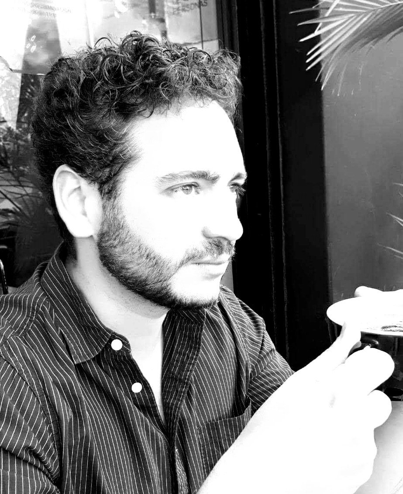

About me
I
am a researcher at the Department of Mathematics of Ghent University.
My research is primarily on mathematical logic, especially
modal logic and proof theory. I am also interested in epistemic logic
and cryptography.
I hold a bachelor's degree in Applied Mathematics from ITAM and a PhD from Stanford University. My doctoral advisor was
Grigori Mints.
Contact
| Address |
Building 23
Krijgslaan 281
B 9000 Ghent
Belgium
|
| E-mail |
David.FernandezDuque "at" UGent.be |
|  |
|
|